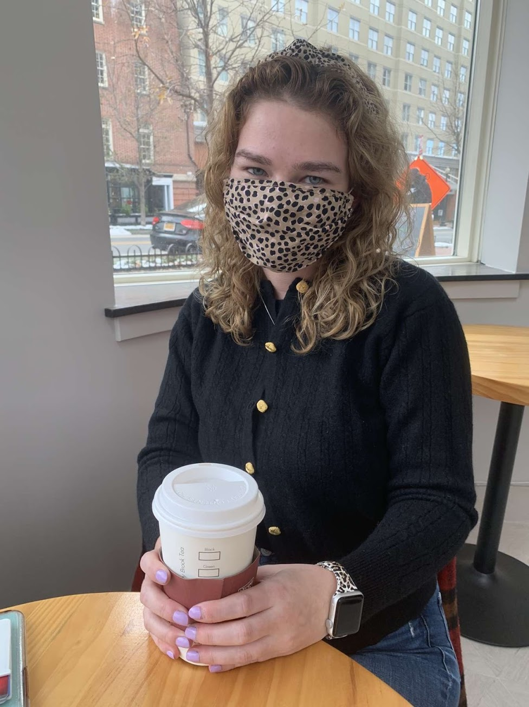

Madison Peek
Journalist passionate in reporting on crime and social justice

Maddy Peek is a journalism and criminology student seeking opportunities to expand her journalist experience.
General Assignments Editor
The Diamondback
April 2021-Present
Leads general assignments desk, edits stories for a variety of desks, develops young writers
Investigative Reporter
The Howard Center for Investigative Journalism
June 2021-August 2021
- Reported on the historical role of white newspapers in inciting racial terror through archival research and interviewing primary sources.
- Collaborated with reporters across the country to write impactful stories how racism still impacts communities today.
Crime Reporter
The Diamondback
May 2020-April 2021
- Reports on breaking crime stories.
- Wrote features about crime trends, hate bias incidents and police reform in College Park and Prince George’s County
Reporter
Capital News Service, D.C.Bureau
Jan. 2020-May 2021
- Provided coverage of the 46th presidential inauguration and former president Donald Trump's impeachment trial, wrote stories following courts and Congress
University of Maryland
- Major: Journalism, Criminology and Criminal Justice
- Media, Self and Society Scholars Program
- Graduation: May 2023
- Comfortable working individually and in a team setting.
- Developed leadership capabilities.
- Creative, enjoys problem-solving.
- Well-versed in politics, social justice and criminology.